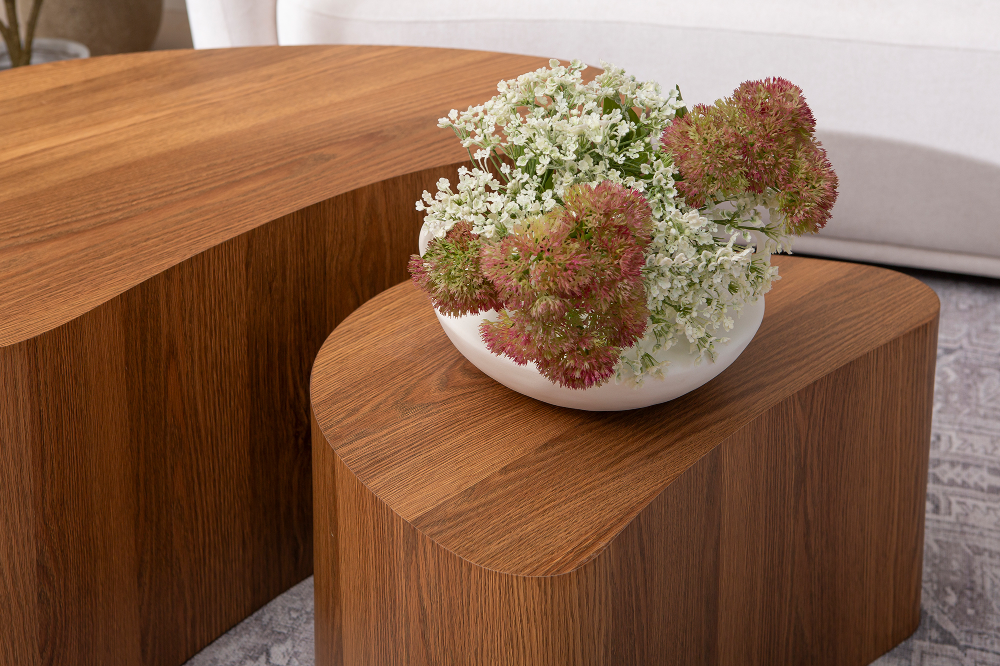
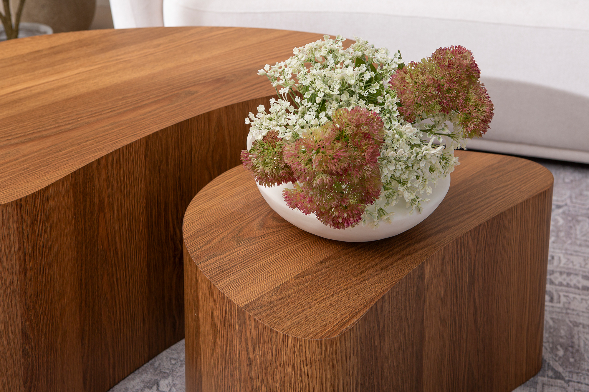

Island sarjapöytä 90x60x40 + 60x40x33 american walnut
198070


 



Kuvaus
Island sarjapöytä – luonnollista tyylikkyyttä kotiisi Island-sarjapöytä yhdistää modernin muotoilun ja lämpimän puunsävyn, luoden ajattoman ja monikäyttöisen lisän sisustukseen. Sen elegantti American Walnut -sävy tuo sisustukseen luonnollista arvokkuutta, joka sopii monenlaisiin tyylisuuntiin. Monikäyttöinen ja toimiva design Island-sarjapöytä koostuu kahdesta eri kokoisesta pöydästä: suuremman pöydän mitat ovat 90 x 60 x 40 cm, ja pienemmän 60 x 40 x 33 cm. Epäsymmetrinen, mutta harmoninen muotoilu tekee siitä sekä visuaalisesti mielenkiintoisen että käytännöllisen. Pöydät voi sijoittaa päällekkäin tilan säästämiseksi tai erikseen, jolloin saat joustavuutta sisustukseen. Kestävä ja tyylikäs materiaalivalinta American Walnut -sävyinen viimeistely antaa pöydälle luonnollisen puun tuntua, mutta sen materiaalit takaavat kestävyyden ja helppohoitoisuuden. Laadukkaasta materiaalista valmistettu pinta kestää hyvin arjen käyttöä, ja se on helppo pitää puhtaana. Loistava hintalaatusuhde Island-sarjapöytä tarjoaa erinomaisen hinta-laatusuhteen, sillä sen ajaton design ja laadukkaat materiaalit tekevät siitä pitkäikäisen valinnan. Tämä sarjapöytä ei ole vain trendikäs, vaan myös käytännöllinen sijoitus kotiin.
Tekniset tiedot
| sarjapöytä koostuu kahdesta eri kokoisesta pöydästä | suuremman pöydän mitat ovat 90 x 60 x 40 cm, ja pienemmän 60 x 40 x 33 cm. Epäsymmetrinen, mutta harmoninen muotoilu tekee siitä sekä visuaalisesti mielenkiintoisen että käytännöllisen. Pöydät voi sijoittaa päällekkäin tilan säästämiseksi tai erikseen, jolloin saat joustavuutta sisustukseen. |
|---|---|
| Koko | 90 × 60 |